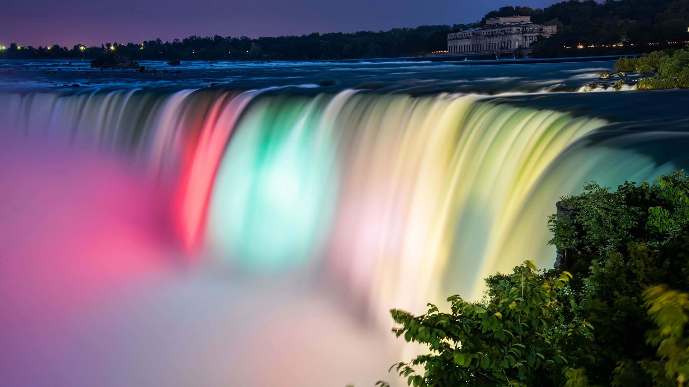

Geography
North America is a continent in the Northern Hemisphere and almost entirely within
the Western
Hemisphere.
It can also be described as the northern subcontinent of a single continent, America. It is bordered to
the
north by the Arctic Ocean, to the east by the Atlantic Ocean, to the southeast by South America and the
Caribbean Sea, and to the west and south by the Pacific Ocean. Because it is on the North American
Tectonic
Plate, Greenland is included as part of North America geographically.
North America covers an area of about 24,709,000 square kilometers (9,540,000 square miles), about 16.5%
of
the Earth's land area and about 4.8% of its total surface. North America is the third-largest continent
by
area, following Asia and Africa, and the fourth by population after Asia, Africa, and Europe. In 2013,
its
population was estimated at nearly 579 million people in 23 independent states, or about 7.5% of the
world's
population.
North America was reached by its first human populations during the last glacial period, via crossing
the
Bering land bridge approximately 40,000 to 17,000 years ago. The so-called Paleo-Indian period is taken
to
have lasted until about 10,000 years ago (the beginning of the Archaic or Meso-Indian period). The
classic
stage spans roughly the 6th to 13th centuries. The first recorded Europeans to visit North America
(other
than Greenland) were the Norse around 1000 AD. Christopher Columbus's arrival in 1492 sparked a
transatlantic exchange which included migrations of European settlers during the Age of Discovery and
the
early modern period. Present-day cultural and ethnic patterns reflect interactions between European
colonists, indigenous peoples, African slaves, immigrants from Europe, Asia, and South Asia, and the
descendants of these groups.
Owing to Europe's colonization of the Americas, most North Americans speak European languages such as
English, Spanish or French, and their cultures commonly reflect Western traditions. However, in parts of
Canada, the United States, Mexico, and Central America, there are indigenous populations continuing
their
cultural traditions and speaking their own languages.
history
The indigenous peoples of the Americas have many creation myths by which they assert that they have been
present on the land since its creation, but there is no evidence that humans evolved there. The
specifics of the initial settlement of the Americas by ancient Asians are subject to ongoing research
and
discussion. The traditional theory has been that hunters entered the Beringia land bridge between
eastern Siberia and present-day Alaska from 27,000 to 14,000 years ago. A growing viewpoint is
that the first American inhabitants sailed from Beringia some 13,000 years ago,with widespread
habitation of the Americas during the end of the Last Glacial Period, in what is known as the Late
Glacial
Maximum, around 12,500 years ago. The oldest petroglyphs in North America date from 15,000 to 10,000
years before present. Genetic research and anthropology indicate additional waves of migration from
Asia via the Bering Strait during the Early-Middle Holocene.
Before contact with Europeans, the natives of North America were divided into many different polities,
from
small bands of a few families to large empires. They lived in several "culture areas", which roughly
correspond to geographic and biological zones and give a good indication of the main way of life of the
people who lived there (e.g., the bison hunters of the Great Plains, or the farmers of Mesoamerica).
Native
groups can also be classified by their language family (e.g., Athapascan or Uto-Aztecan). Peoples with
similar languages did not always share the same material culture, nor were they always allies.
Anthropologists think that the Inuit people of the high Arctic came to North America much later than
other
native groups, as evidenced by the disappearance of Dorset culture artifacts from the archaeological
record,
and their replacement by the Thule people.
During the thousands of years of native habitation on the continent, cultures changed and shifted. One
of
the oldest yet discovered is the Clovis culture (c. 9550–9050 BCE) in modern New Mexico. Later groups
include the Mississippian culture and related Mound building cultures, found in the Mississippi river
valley
and the Pueblo culture of what is now the Four Corners. The more southern cultural groups of North
America
were responsible for the domestication of many common crops now used around the world, such as tomatoes,
squash, and maize. As a result of the development of agriculture in the south, many other cultural
advances
were made there. The Mayans developed a writing system, built huge pyramids and temples, had a complex
calendar, and developed the concept of zero around 400 CE.
The first recorded European references to North America are in Norse sagas where it is referred to as
Vinland. The earliest verifiable instance of pre-Columbian trans-oceanic contact by any European culture
with the North America mainland has been dated to around 1000 CE. The site, situated at the northernmost
extent of the island named Newfoundland, has provided unmistakable evidence of Norse settlement. Norse
explorer Leif Erikson (c. 970–1020 CE) is thought to have visited the area. Erikson was the first
European to make landfall on the continent (excluding Greenland).
The Mayan culture was still present in southern Mexico and Guatemala when the Spanish conquistadors
arrived,
but political dominance in the area had shifted to the Aztec Empire, whose capital city Tenochtitlan was
located further north in the Valley of Mexico
Climate
North America is a very large continent that surpasses the Arctic Circle, and the
Tropic of Cancer.
Greenland, along with the Canadian Shield, is tundra with average temperatures ranging from 10 to 20 °C
(50
to 68 °F), but central Greenland is composed of a very large ice sheet. This tundra radiates throughout
Canada, but its border ends near the Rocky Mountains (but still contains Alaska) and at the end of the
Canadian Shield, near the Great Lakes. Climate west of the Cascade Range is described as being temperate
weather with average precipitation 20 inches (510 mm). Climate in coastal California is described to be
Mediterranean, with average temperatures in cities like San Francisco ranging from 57 to 70 °F (14 to 21
°C)
over the course of the year.
Stretching from the East Coast to eastern North Dakota, and stretching down to Kansas, is the
continental-humid climate featuring intense seasons, with a large amount of annual precipitation, with
places like New York City averaging 50 inches (1,300 mm). Starting at the southern border of the
continental-humid climate and stretching to the Gulf of Mexico (whilst encompassing the eastern half of
Texas) is the subtropical climate. This area has the wettest cities in the contiguous United States,
with
annual precipitation reaching 67 inches (1,700 mm) in Mobile, Alabama. Stretching from the borders of
the continental humid and subtropical climates, and going west to the Sierra Nevada, south to the
southern
tip of Durango, north to the border with tundra climate, the steppe/desert climate is the driest climate
in
the United States. Highland climates cut from north to south of the continent, where subtropical or
temperate climates occur just below the tropics, as in central Mexico and Guatemala. Tropical climates
appear in the island regions and in the subcontinent's bottleneck. Usually of the savanna type, with
rains
and high temperatures constants the whole year. Found in countries and states bathed by the Caribbean
Sea or
to the south of the Gulf of Mexico and the Pacific Ocean.
Languages
The dominant languages in North America are English, Spanish, and French. Danish is
prevalent in
Greenland
alongside Greenlandic, and Dutch is spoken side by side local languages in the Dutch Caribbean. The term
Anglo-America is used to refer to the anglophone countries of the Americas: namely Canada (where English
and
French are co-official) and the United States, but also sometimes Belize and parts of the tropics,
especially the Commonwealth Caribbean. Latin America refers to the other areas of the Americas
(generally
south of the United States) where the Romance languages, derived from Latin, of Spanish and Portuguese,
(but
French-speaking countries are not usually included) predominate: the other republics of Central America
(but
not always Belize), part of the Caribbean (not the Dutch-, English-, or French-speaking areas), Mexico,
and
most of South America (except Guyana, Suriname, French Guiana (France), and the Falkland Islands (UK)).
The French language has historically played a significant role in North America and now retains a
distinctive presence in some regions. Canada is officially bilingual. French is the official language of
the
Province of Quebec, where 95% of the people speak it as either their first or second language, and it is
co-official with English in the Province of New Brunswick. Other French-speaking locales include the
Province of Ontario (the official language is English, but there are an estimated 600,000
Franco-Ontarians),
the Province of Manitoba (co-official as de jure with English), the French West Indies and Saint-Pierre
et
Miquelon, as well as the US state of Louisiana, where French is also an official language. Haiti is
included
with this group based on historical association but Haitians speak both Creole and French. Similarly,
French
and French Antillean Creole is spoken in Saint Lucia and the Commonwealth of Dominica alongside English.
A significant number of Indigenous languages are spoken in North America, with 372,000 people in the
United
States speaking an indigenous language at home, about 225,000 in Canada and roughly 6 million in
Mexico. In the United States and Canada, there are approximately 150 surviving indigenous languages of
the 300 spoken prior to European contact.
Facts
There is no landlocked country in North America!
Canada. The country is covering almost half the North
American continent's land area. Canada is
slightly
bigger
than the USA and about as big as China.
Read more about Canada here.
St Kitts and Nevis with only about 54,000 inhabitants.
This island country is located in the Caribbean
Sea.
The
least populated dependency is Montserrat, a
British Overseas Territory, with less than 6,000
inhabitants.